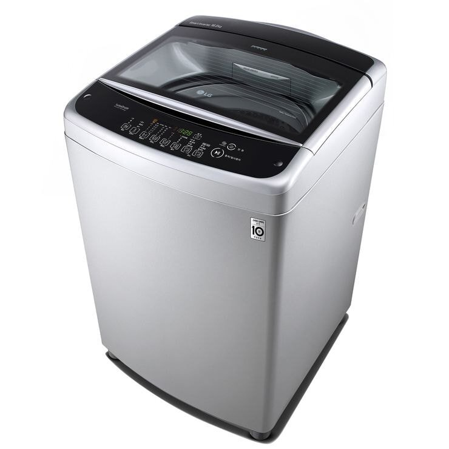

https://cafe.daum.net/subdued20club/ReHf/5724502?svc=cafeapi

통돌이 세탁기
드럼 나온지 꽤됐는데 아직도 통돌이도 그냥저냥 꽤 나감
신제품도 간간 나오긴 하고...
===
성능 테스트하니까 드럼이 더 잘 빨린다 하던데
개인적으로는 통돌이가 빨래 더 잘 되는 느낌
https://cafe.daum.net/subdued20club/ReHf/5724502?svc=cafeapi

통돌이 세탁기
드럼 나온지 꽤됐는데 아직도 통돌이도 그냥저냥 꽤 나감
신제품도 간간 나오긴 하고...
===
성능 테스트하니까 드럼이 더 잘 빨린다 하던데
개인적으로는 통돌이가 빨래 더 잘 되는 느낌
댓글
수집 당시 댓글 33개
아이스크림마싯엉 · 16 시간 전
꺼내기가 넘 힘들어
젖꼭빅파이 · 1 시간 전
키가 존나작으신가보네....
헤이즐 · 16 시간 전
잘 빤다고 하니까 좀 야하네
니말맞음댓글ㄴㄴ · 16 시간 전
세탁실에는 통돌이 있고 뒷베란다에는 워시콤보있는데 이불이랑 수건은 뭔가 드럼으로 빨면 성에 안차
Purplerain · 15 시간 전
삶아
맞춤법전도사 · 16 시간 전
건조기능까지 있는 드럼 써봐라 ㄹㅇ 삶이 윤택해진다
김펭귄 · 15 시간 전
ㄹㅇ 일체형 개좋음 단점은 비싸다는거 하나
장성의프리랙 · 15 시간 전
아냐 일체형쓰면 정말로.. 따로써야 좋음.. 어차피 세탁물 꺼내서 건조용 아닌거 분류도 해야하고..
도로보 · 15 시간 전
일체형 안좋다..
qwasdf · 9 시간 전
애둘 있는데 애기 빨래로 세탁 엄청하는데 일체형이면 답답해서 못쓸듯
야니네코 · 9 시간 전
냄새 나던데 예전에 혼자살때 집주인이 세탁기 일체형으로 바꿔줬거든? 쌔거 건조기돌려보니까 생선비린내는 아닌데 무슨 비릿한? 냄새나서 빨래 다시빨았어 나 코 진짜 존나 엄청 민감하거든 그때 딱 한번쓰고 안써봤는데 지금생각해보니까 새거라 그랬나..
sksjwu · 7 시간 전
그게 지금 나오는 찐 건조기 일체형 400짜린지 그냥 뜨거운바람나오는 드럼인지에 따라 천지차이일거임
년째대학원생 · 15 시간 전
드럼은 세탁기고 통돌이는 때및빨랫감분쇄기임 달라 ㅇㅇ
overfIow승희 · 15 시간 전
분쇄기 ㅋㅋㅋㅋ
norepfool · 15 시간 전
요즘 통돌이는 더 이상 개발은 없고 원가 절감만 계속 들어가면서 가격은 또 점점 비싸져서 매리트가 전혀 없다
개헛소리 · 15 시간 전
드럼운 공간활용 잘 되는게 가장 큰 장점이지 ㅋㅋ 물 소비가 적다는건 한국에선 크게 장점이 되진 않는듯
분식삼대장 · 15 시간 전
위로 세탁물 꺼낼수 있어서 통돌이만 설치할수 있는 공간에도 많이 쓰이는듯?
中出し · 14 시간 전
통돌이 옷 데미지 먹어서 별로임
하와이안피자는세계제일의발명품 · 14 시간 전
중간에 빨래 추가 가능
ISA · 14 시간 전
유튜버가 드럼 통돌이 전부 실험해봤는데 빨래는 드럼이 잘되고 물도 드럼이 덜씀. 다만 통돌이는 헹굼을 잘해주고 빨래 추가하기가 좋음
안양인삼공사 · 13 시간 전
요즘 드럼도 중간 세탁물 추가가 어렵지 않아서.. 헹굼도 추가해버리면 그만이긴 해 다만 덩치 큰 나에게는 숙여서 꺼내야한다는게 제일 큰 단점ㅜㅜ
아구찜국밥 · 13 시간 전
삼성 통돌이 세탁기 한 30년정도 쓰고 있는데 잘 돌아가서 만족함 먼지필터 접합 부위가 깨져서 새로 사려다 고무줄로 묶어 쓰니 문제 없더라고 앞으로 계속 가자
버디언 · 13 시간 전
드럼은 ㄹㅇ 건조타워 발사대임 건조기 위에 얹을거 아니면 무조건 통돌이
순애만화에미친놈 · 13 시간 전
세탁물 불릴 때 최고임
초격아츠 · 12 시간 전
세제넣고 불리니까 빨래 안해도 때가 거의다 분해되던데 드럼은 그게 안되는데 어떻게 세탁이 되는지, 찌든때는 어떻게하는지 존나 궁금함 물도 조금만 넣고 행구는것도 그좇만한 물량으로 어떻게 행구는지 좇도 믿음이 안감
던킨제로자두 · 12 시간 전
느낌이아니라 실제로도 잘됨 우리집 다시 통돌이로 바꿈.. 일단 내부 크기부터가 차원이 다르지 그야말로 물레방아 빨래의 지혜
구동매 · 11 시간 전
느낌임. 빨래 잘되는건 드럼이 더 잘됨. 사용법이 더 까다로워서 그렇지
던킨제로자두 · 10 시간 전
살균같은건 잘되는거같긴한데 누런때 안빠지던데 매번 2시간 숙성된 다음 돌려지는거 진짜 좆같음
구동매 · 10 시간 전
이게 빨래방식때문에 세제가 중요하긴해. 빨래 코스 선정도 해줘야 하고. 기본적으로 통돌이는 비벼 빠는 시스템이라 당연히 효과좋긴한데 옷감 손상이 너무 심해져서 좀 그래. 그 세제나 빨래방식을 최적화 해서 돌릴때 두들겨 빠는 시스템인 드럼이 더 잘 빨린다고 함.
던킨제로자두 · 10 시간 전
두들긴다기보단 좀 음파마사지같은걸 하는데 여튼 잘안빠져서 구림 통돌이가 폭포수에 옷 널어놓고 쳐맞는거라면 이건 반죽하는느낌 심지어 담가놓는기능 안쓰면 절반도 못따라가서 대기시간 필수임 200만원 낭비 goat
부엉맨 · 11 시간 전
건조 일체형 통돌이 만들어주
야니네코 · 9 시간 전
드럼 삶음 기능때문에 통돌이 못씀 드럼은 90도까지 올려서 개썩은빨래도 완전살균인데 통돌이는 걍 뜨거운물 틀면 보일러에서 나오는 그정도온도 뿐이야 잘해야 50 60도 되려나 물도 존나많이쓰고
됃됃햄휴먼 · 1 시간 전
ㄹㅇ